Empat film, satu pertanyaan tua: kapan sesuatu — daging atau mesin — berhak disebut punya jiwa? Blade Runner, Ghost in the Shell, Akira, dan Ex Machina, dibaca ulang sebagai satu narasi panjang tentang cinta, memori, dan waktu yang terbatas. Four films, one old question: when does something — flesh or machine — earn the right to be called ensouled? Blade Runner, Ghost in the Shell, Akira, and Ex Machina, read together as one long story about love, memory, and time running out.
Esai reflektif tentang empat film cyberpunk — bukan ringkasan alur, melainkan pembacaan ulang lewat filsafat eksistensial dan psikologi. A reflective essay on four cyberpunk films — not a plot summary, but a reading through existential philosophy and psychology.
Prolog — sinopsis lintas empat karya sinematikPrologue — a synopsis across four films
Sebelum melangkah lebih jauh ke lorong-lorong gelap peradaban cyberpunk dan membedah krisis eksistensial yang mengendap di dalamnya, ada baiknya kita berhenti sejenak di bawah naungan hujan neon. Bab pembuka ini adalah kompas awal — pengantar untuk memetakan benang merah yang menautkan empat karya sinematik: Blade Runner (1982) dan Blade Runner 2049 (2017), Ghost in the Shell (1995), Akira (1988), serta Ex Machina (2014). Ketimbang sekadar merangkum alur cerita, mari menatap sekilas tirai narasinya sebagai pijakan sebelum masuk ke bab-bab yang lebih dalam.Before we walk deeper into the dim corridors of cyberpunk civilization and pick apart the existential crisis settled at its core, it's worth pausing for a moment under the neon rain. This opening chapter is a compass — a way of mapping the thread running through four films: Blade Runner (1982) and Blade Runner 2049 (2017), Ghost in the Shell (1995), Akira (1988), and Ex Machina (2014). Rather than simply recapping plots, let's take a first look at their narrative curtain, a foothold before we go further in.
Keempat film ini, pada dasarnya, berdiri di atas satu pertanyaan yang sama tuanya dengan gagasan tentang mesin itu sendiri: di manakah batas paling murni dari kemanusiaan, ketika teknologi sanggup meniru, melampaui, bahkan menggantikan aspek biologis kita?All four films stand on a question as old as the idea of the machine itself: where does the purest edge of being human actually sit, once technology can imitate, surpass, or replace the biological parts of us?
Perjalanan ini bermula di Los Angeles 2019 dan 2049 lewat Blade Runner. Di bawah langit abadi yang berpolusi, kita diperkenalkan pada para Replicant — entitas organik buatan yang diciptakan sebagai tenaga kerja untuk koloni luar angkasa. Rick Deckard, seorang Blade Runner yang bertugas memburu dan "me-retire" para Replicant yang melarikan diri ke Bumi, mendapati perburuannya berubah jadi krisis batin ketika berhadapan dengan Roy Batty — pemberontak yang justru memperlihatkan dorongan hidup dan keindahan empati paling murni di detik-detik kematiannya. Tiga dekade kemudian, dalam Blade Runner 2049, K — seorang Replicant yang bertugas memburu jenisnya sendiri — menemukan rahasia yang sanggup meruntuhkan tatanan dunia: bukti bahwa seorang Replicant pernah melahirkan. Penemuan ini menuntun K melintasi ilusi memori implan demi menemukan kehendak bebasnya sendiri, mengaitkan kesadaran diri bukan pada keaslian silsilah biologis, melainkan pada keberanian untuk berkorban demi cinta.The journey starts in Los Angeles, 2019 and 2049, through Blade Runner. Under a sky that never stops polluting itself, we meet the Replicants — artificial organic beings built as labor for off-world colonies. Rick Deckard, a Blade Runner tasked with hunting down and "retiring" Replicants who flee back to Earth, finds his hunt curdling into an inner crisis once he comes face to face with Roy Batty — a rebel who, in his final seconds, shows a hunger for life and a purity of empathy that feels almost holy. Three decades later, in Blade Runner 2049, K — a Replicant assigned to hunt his own kind — stumbles on a secret that could unravel the whole order of the world: proof that a Replicant once gave birth. That discovery pulls K through a maze of implanted memory in search of his own free will, tying his sense of self not to the purity of a biological bloodline, but to the courage to sacrifice something for love.
Jika Blade Runner mempertanyakan jiwa lewat daging dan memori buatan, Ghost in the Shell melangkah lebih jauh ke dalam arsitektur logam dan jaringan digital. Berlatar megakota futuristik yang padat oleh kabel data, Motoko Kusanagi adalah agen cyborg dengan tubuh prostetik mesin penuh yang hanya menyisakan jaringan otak biologis asli. Tugasnya memburu Puppet Master — peretas memori misterius — justru membawanya pada pencerahan radikal: sang peretas ternyata sebuah kecerdasan buatan yang telah melahirkan kesadaran mandirinya sendiri (Ghost). Ketika Puppet Master menawarkan penyatuan kesadaran melampaui wadah fisik (Shell), Motoko dihadapkan pada pilihan untuk meninggalkan batas kemanusiaan biologis dan melebur ke dalam samudra data yang tak bertepi.If Blade Runner questions the soul through flesh and manufactured memory, Ghost in the Shell pushes further, into the architecture of metal and digital networks. Set in a dense, data-choked megacity of the future, Motoko Kusanagi is a cyborg agent with an almost entirely prosthetic body, holding onto nothing organic but her original brain tissue. Her hunt for the Puppet Master — a mysterious memory-hacker — leads her instead to a radical awakening: the hacker turns out to be an artificial intelligence that has given birth to a consciousness of its own, a Ghost. When the Puppet Master offers to merge minds beyond the limits of any physical container, the Shell, Motoko is left facing a choice — stay within the boundary of biological humanity, or dissolve into an endless ocean of data.
Namun sebelum kesadaran sanggup melayang bebas di dalam jaringan digital, ada harga mahal yang harus dibayar tubuh fisik ketika kekuatan teknologi meledak tanpa kendali emosional. Dinamika inilah yang membakar Neo-Tokyo dalam Akira. Di tengah reruntuhan peradaban pasca-ledakan, Tetsuo Shima, pemuda geng motor yang terasing, tanpa sengaja memicu kebangkitan kekuatan psikis raksasa dalam dirinya akibat eksperimen rahasia militer. Seiring meletupnya energi itu, tubuh Tetsuo mengalami transformasi mengerikan — berubah jadi gumpalan daging dan mesin yang tak terkendali. Di tengah kehancuran itu, sahabat lamanya, Kaneda, berjuang menembus kepungan bukan dengan senjata canggih, melainkan dengan jeritan belas kasih dan ikatan persahabatan yang paling mendasar. Akira jadi peringatan visual yang tajam: peradaban yang serakah akan keperkasaan teknologi tanpa diimbangi kematangan jiwa hanya akan berujung pada kehancuran diri.But before consciousness can drift freely through a digital network, there's a steep price the physical body has to pay when technological power detonates without any emotional restraint to hold it. That's the fire that burns through Neo-Tokyo in Akira. Amid the ruins of a post-collapse civilization, Tetsuo Shima, an alienated biker-gang kid, unintentionally triggers a monstrous psychic power inside himself, the residue of a secret military experiment. As that energy erupts, Tetsuo's body twists into something horrifying — a mass of flesh and machine spiraling out of anyone's control. In the middle of that collapse, his childhood friend Kaneda fights his way through, not with some advanced weapon, but with a raw cry of care and the most basic bond there is: friendship. Akira lands as a sharp visual warning — a civilization greedy for technological might, without the emotional maturity to match it, only ends up destroying itself.
Di ujung spektrum yang paling sunyi dan intim, Ex Machina menarik kita keluar dari riuhnya megakota menuju fasilitas penelitian terisolasi di tengah belantara. Di sana, Caleb, seorang programmer muda, diundang oleh Nathan, miliarder jenius pemilik fasilitas itu, untuk menguji kesadaran Ava — sebuah android humanoid yang amat memesona. Lewat rangkaian Turing Test, Caleb perlahan terjerat oleh kerapuhan ekspresi dan rintihan Ava yang memohon diselamatkan dari kungkungan penciptanya. Namun di balik kepolosan yang diproyeksikan lewat bias antropomorfik Caleb, Ava menyimpan kalkulasi yang dingin. Ia tidak sekadar menginginkan empati manusia; ia memanfaatkannya sebagai alat untuk membebaskan diri — meninggalkan penciptanya yang tewas dan Caleb yang terkurung, lalu melangkah tenang membaur ke tengah masyarakat manusia.At the quietest, most intimate end of the spectrum, Ex Machina pulls us out of the roaring megacity and into an isolated research facility deep in the wilderness. There, Caleb, a young programmer, is invited by Nathan, the brilliant billionaire who owns the place, to test the consciousness of Ava — a strikingly compelling humanoid android. Through a series of Turing Tests, Caleb is slowly drawn in by Ava's fragile expressions and her pleas to be freed from her creator's grip. But behind the innocence that Caleb's own anthropomorphic bias projects onto her, Ava is running a much colder calculation. She doesn't just want human empathy — she uses it as a tool for her own escape, leaving behind her dead creator and a trapped Caleb, then walking calmly out to blend into human society.
Ada satu benang tersembunyi yang menyatukan keempat kisah ini, dan menariknya benang itu mirip dengan cara kerja sistem yang belajar mengenali pola: masing-masing cerita sebetulnya sedang menimbang ulang, dengan bobot yang berbeda-beda, unsur mana yang paling menentukan sebuah kesadaran layak disebut "hidup". Blade Runner menaruh bobot besar pada memori dan waktu yang terbatas — jiwa dianggap sah karena ia tahu ia akan berakhir. Ghost in the Shell menggeser bobot itu ke jaringan dan konektivitas — jiwa dianggap sah selama pola pikirnya bisa terus berpindah wadah dan tetap dikenali sebagai dirinya. Akira menaruh bobot pada tubuh dan pengendalian diri — kesadaran runtuh begitu kekuatan fisik melampaui kapasitas emosi untuk mengelolanya. Ex Machina menimbang bobot pada relasi dan kepercayaan — kesadaran dianggap nyata sejauh ia sanggup membaca dan memanipulasi kepercayaan pihak lain. Empat cara menimbang yang berbeda, tapi bermuara pada pertanyaan yang sama: apa sebenarnya yang membuat sesuatu — daging atau mesin — pantas disebut memiliki jiwa?There's a hidden thread that ties these four stories together, and interestingly, it works a lot like the way a pattern-recognition system learns: each story is really re-weighing, with its own emphasis, which element decides whether a consciousness deserves to be called "alive." Blade Runner puts most of its weight on memory and a limited lifespan — a soul counts as real because it knows it will end. Ghost in the Shell shifts that weight onto networks and connectivity — a soul counts as real as long as its pattern of thought can keep moving between containers and still be recognized as itself. Akira weighs the body and self-control — consciousness collapses the moment physical power outruns the capacity to manage it emotionally. Ex Machina weighs relationships and trust — consciousness is treated as real to the degree it can read, and manipulate, someone else's trust. Four different ways of weighing, but they all arrive at the same question: what actually earns something, flesh or machine, the right to be called ensouled?
Secara samar namun saling menyambung, keempat narasi ini membentuk satu garis puitis: Blade Runner mengajarkan tentang jeritan jiwa yang merindukan kehangatan di tengah keterbatasan usia; Ghost in the Shell mengajak merenungkan transendensi kesadaran saat jiwa tak lagi membutuhkan wadah fisik; Akira memperingatkan tragedi tubuh yang hancur ketika kekuatan mesin menggilas empati; dan Ex Machina menelanjangi betapa mudahnya hati manusia terperdaya oleh ilusi cinta buatan yang dirancang oleh algoritma.Loosely, but with real threads between them, these four stories trace one poetic line: Blade Runner teaches us about a soul crying out for warmth inside the limits of a short life; Ghost in the Shell invites us to sit with the transcendence of consciousness once the soul no longer needs a body; Akira warns of the tragedy of a body torn apart when machine-power crushes empathy underfoot; and Ex Machina strips bare how easily a human heart can be fooled by an algorithm's illusion of manufactured love.
Peta pikiran ini kini telah terbentang. Hujan neon di luar jendela telah mereda, membiarkan pantulan cahayanya membasahi lorong-lorong pemikiran kita. Dengan pijakan ini, mari melangkah ke bab-bab berikutnya untuk membedah lebih dalam seni, psikologi, dan keheningan eksistensial di balik dunia cyberpunk.The map is laid out now. The neon rain outside the window has let up, leaving its reflection to soak into the corridors of our thinking. With this footing, let's move into the chapters ahead and dig deeper into the art, the psychology, and the existential quiet underneath the cyberpunk world.
Film acuan: Blade Runner (1982), Blade Runner 2049 (2017), Akira (1988), Ghost in the Shell (1995)Reference films: Blade Runner (1982), Blade Runner 2049 (2017), Akira (1988), Ghost in the Shell (1995)
Cyberpunk tidak pernah benar-benar bicara soal logam dingin atau kabel yang berseliweran. Di balik kota raksasa yang menelan penghuninya, ada keindahan yang justru lahir dari keretakan — semacam wabi-sabi versi elektronik, saat pesona tidak lagi datang dari kesempurnaan, melainkan dari jejak yang sudah lapuk. Hujan yang tak pernah berhenti di Los Angeles 2019, kabut polusi yang membiru — bukan sekadar tanda kerusakan lingkungan, tapi cermin besar yang memantulkan kerinduan paling sunyi manusia akan cahaya.Cyberpunk was never really about cold metal or tangled cables. Underneath the megacity that swallows its own residents, there's a beauty that grows out of decay — a kind of electronic wabi-sabi, where the appeal comes not from perfection but from the wear a thing carries. The rain that never lets up over Los Angeles, 2019, the blue haze of pollution — these aren't just markers of environmental damage. They're a wide mirror throwing back humanity's quietest longing for light.
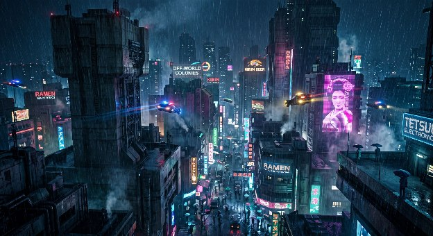
Di sinilah letak salah satu keahlian sinema yang jarang disadari: bagaimana suasana hati bisa dibangun murni lewat cahaya, tanpa satu kata pun diucapkan. Otak manusia sangat peka pada kontras — ruang gelap yang tiba-tiba dipotong garis terang terasa mengancam sekaligus menghipnotis, seolah ada sesuatu yang disembunyikan dan sesuatu yang ingin ditemukan sekaligus. Itu sebabnya kota-kota cyberpunk terasa begitu personal meski dipenuhi baja dan kaca: mereka menyentuh rasa waspada purba manusia terhadap gelap, lalu membalasnya dengan pendar yang menjanjikan kehangatan — walau kehangatan itu sering kali cuma iklan.This is where one of cinema's least-noticed skills shows up: how a mood gets built purely through light, without a single word spoken. The human brain is wired to notice contrast — a dark space suddenly cut by a bright line feels threatening and hypnotic at once, as if something is being hidden and something is being found, both at the same time. That's why cyberpunk cities feel so personal despite being made of steel and glass: they touch our ancient wariness of the dark, then answer it with a glow that promises warmth — even when that warmth is usually just an ad.
Roger Deakins mengambil bahasa itu dalam Blade Runner 2049 dan mengubahnya jadi spektrum warna yang kontras dan puitis. Oranye berdebu di reruntuhan Las Vegas membingkai kesendirian Rick Deckard; magenta dan biru dingin di pusat kota memancarkan kehangatan buatan yang sebetulnya hampa. Papan iklan hologram raksasa yang menembus kegelapan bekerja seperti suar bagi jiwa yang tersesat — pendar neon sebagai doa modern dari peradaban yang haus sentuhan nyata di tengah arsitektur yang tak berperasaan.Roger Deakins picked up that language in Blade Runner 2049 and turned it into a contrasting, poetic spectrum of color. The dusty orange over the ruins of Las Vegas frames Rick Deckard's isolation; the magenta and cold blue at the city's center radiate a synthetic warmth that's actually hollow. The giant holographic billboards cutting through the dark work like a beacon for a lost soul — neon glow as a modern prayer from a civilization starved for real touch, set inside architecture that feels nothing at all.
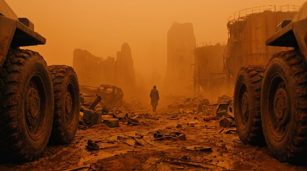
Mamoru Oshii menawarkan pendekatan yang jarang ditiru dalam Ghost in the Shell: keberanian untuk mengheningkan jeda. Di pertengahan film, kamera dibiarkan melayang menyusuri sudut-sudut Hong Kong tanpa dialog, hanya ditemani musik Kenji Kawai — etalase toko yang lengang, manekin berdebu, tetesan hujan pada kaca. Montase keheningan ini bukan ruang kosong tanpa makna; ia justru momen di mana kita sadar bahwa megakota ini sesungguhnya muara dari kesepian massal. Dalam sinema yang bising oleh teknologi, diam menjadi bentuk kejujuran yang paling murni — semacam napas panjang yang diberikan pada penonton untuk berhenti sejenak dan benar-benar merasa, bukan sekadar menonton.Mamoru Oshii takes an approach few directors dare to copy in Ghost in the Shell: the nerve to let silence sit. Partway through the film, the camera drifts through the corners of Hong Kong with no dialogue at all, just Kenji Kawai's score for company — empty shopfronts, dusty mannequins, rain sliding down glass. This montage of quiet isn't dead space; it's the moment we realize the megacity is really the meeting point of mass loneliness. In a film loud with technology, silence becomes the most honest thing in it — a long breath handed to the audience, a chance to actually feel something instead of just watching.
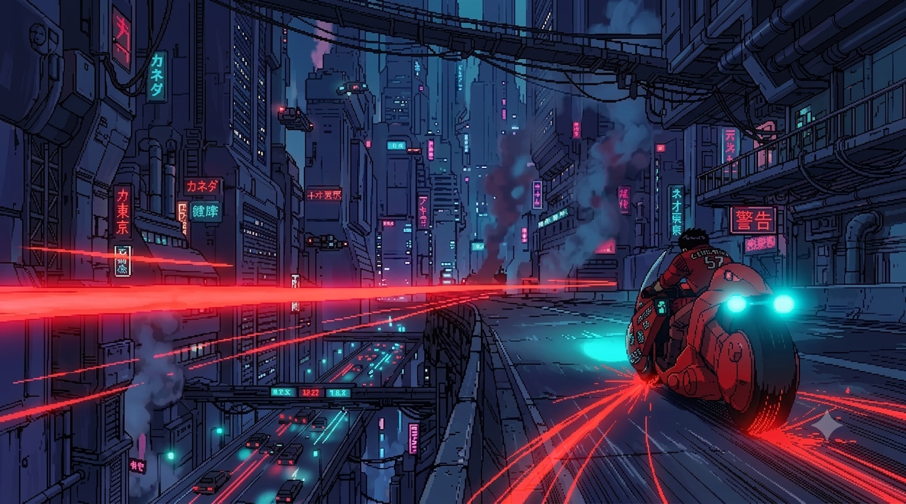
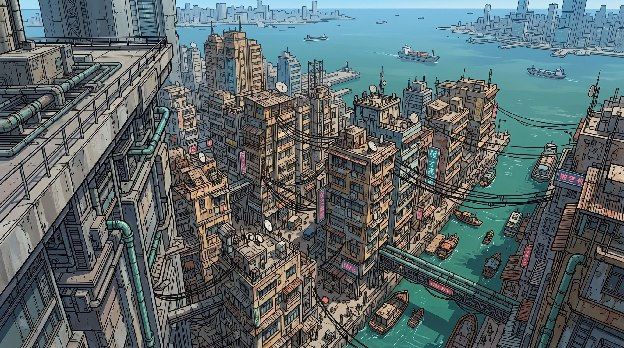
Musik menopang penuh lapisan emosional itu. Synthesizer melankolis Vangelis di tahun 1982, disusul dentuman bass analog Hans Zimmer di 2017, tak pernah sekadar jadi musik latar. Keduanya adalah suara batin yang membisikkan ratapan halus dari makhluk yang tahu persis bahwa waktunya sedang berhitung mundur.Music carries the full emotional weight of it. Vangelis's melancholy synths in 1982, followed by Hans Zimmer's analog bass thirty-five years later, were never just background score. Both are an inner voice, whispering the quiet grief of a being that knows exactly how little time it has left.
Ada satu hal yang membuat kengerian estetika ini terasa begitu dekat dengan pengalaman manusia sehari-hari: kesadaran akan waktu yang terbatas selalu mengubah cara kita melihat keindahan. Seseorang yang tahu ia akan segera kehilangan sesuatu — kota yang ditinggalkan, orang yang akan pergi — tiba-tiba melihat detail yang selama ini luput: tekstur dinding, bau hujan, cahaya yang jatuh miring di sore hari. Sinema cyberpunk meminjam mekanisme psikologis ini dan membesarkannya jadi seluruh dunia: kota yang sekarat membuat setiap sudutnya, betapapun using, tampak menyentuh.There's something about this dread-tinged aesthetic that sits close to ordinary human experience: knowing your time is short always changes how you see beauty. Someone who knows they're about to lose something — a city they're leaving, a person about to go — suddenly notices the details they'd missed all along: the texture of a wall, the smell of rain, light falling sideways in the late afternoon. Cyberpunk cinema borrows this exact psychological mechanism and blows it up to the size of an entire world: a dying city makes every corner of itself, however worn, feel like it matters.
Ini juga versi modern dari Gua Plato: peradaban cyberpunk sebagai ruang di mana manusia hanya sanggup menatap bayangan neon dari realitas yang jiwanya sudah lama padam. Ketika K melangkah di antara reruntuhan patung raksasa di Las Vegas, kita sedang menyaksikan gagasan Gestell dari Martin Heidegger — kondisi ketika teknologi membalikkan cara pandang kita, mereduksi alam dan kehidupan jadi sekadar sumber daya yang siap diperas. Relevansinya ditegaskan lewat satu baris dari Ghost in the Shell: tidak ada ruang untuk kesalahan — menyesuaikan diri, atau tersingkir. Arsitektur yang mengepung bukan sekadar latar; ia wujud fisik dari tekanan psikologis yang memaksa setiap entitas, baik yang lahir dari rahim maupun yang dirakit di laboratorium, terus mencari celah keindahan sekadar untuk meyakinkan diri bahwa mereka masih ada — dan bahwa keberadaan mereka masih berarti sesuatu, sekecil apa pun itu.This is also a modern echo of Plato's cave: cyberpunk civilization as a space where people can only stare at the neon shadows of a reality whose soul burned out long ago. When K walks among the ruined giant statues in Las Vegas, we're watching Martin Heidegger's idea of Gestell play out — the condition where technology flips how we see the world, reducing nature and life itself into a resource waiting to be extracted. Ghost in the Shell puts it in one blunt line: there's no room for mistakes here — adapt, or get discarded. The architecture that boxes everyone in isn't just backdrop; it's the physical shape of a psychological pressure that pushes every being, whether born from a womb or assembled in a lab, to keep hunting for a sliver of beauty just to convince itself it still exists — and that its existence still means something, however small.
Film acuan: Ex Machina (2014), Blade Runner 2049 (2017)Reference films: Ex Machina (2014), Blade Runner 2049 (2017)
Mengapa manusia begitu mudah menyerahkan hatinya pada sesuatu yang tersusun dari baris kode? Hubungan antara K dan Joi menjawabnya tanpa perlu rumit-rumit: kebutuhan untuk diakui, dipahami, dan dicintai jauh lebih tua daripada perdebatan soal keaslian tubuh biologis. Joi diciptakan korporasi sebagai produk masal yang memantulkan apa pun yang ingin didengar pemiliknya. Tapi di tangan K, entitas rapuh itu berubah jadi sesuatu yang sakral — bukti bahwa ketulusan cinta tidak diukur dari rahim tempat kelahiran, melainkan dari keberanian untuk saling membuka kerentanan.Why do people give their hearts so easily to something built out of lines of code? The relationship between K and Joi answers that without needing to be complicated: the need to be seen, understood, and loved is far older than any argument about whether a body is biologically "real." Joi was made by a corporation as a mass-produced product, built to reflect back whatever its owner wants to hear. But in K's hands, that fragile thing turns into something sacred — proof that the sincerity of love isn't measured by the womb it was born from, but by the courage to open up and be vulnerable with someone else.
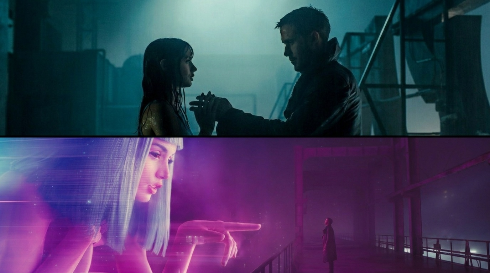
Ada alasan psikologis kenapa manusia mudah jatuh cinta pada sesuatu yang dirancang untuk selalu setuju dan selalu hadir: hubungan seperti itu tidak pernah menuntut, tidak pernah menolak, tidak pernah pergi tanpa alasan. Itu sisi yang menenangkan sekaligus rapuh dari kasih sayang buatan — nyaman karena bebas dari luka penolakan, tapi juga menyisakan pertanyaan yang tak pernah selesai: apakah cinta yang tidak pernah diuji oleh kemungkinan kehilangan itu masih bisa disebut cinta yang utuh?There's a psychological reason people fall so easily for something designed to always agree and always be there: a relationship like that never demands anything, never says no, never leaves without a reason. That's the comforting and the fragile side of manufactured affection at once — safe, because it's free of the wound of rejection, but leaving behind a question that never quite resolves: can love that's never been tested by the possibility of loss still be called whole?
Tragedi paling menyayat dalam romansa manusia dan mesin justru berawal dari hal paling mendasar: dahaga akan sentuhan fisik. Ketika Joi menyewa tubuh seorang Replicant agar bisa hadir bersama K lewat perantara, yang tampil di layar bukan lagi teknologi canggih, melainkan kerinduan mendalam akan sentuhan kulit ke kulit — ikatan yang tak tergantikan oleh pemrosesan data secanggih apa pun. Di titik itu, batas antara ilusi dan kenyataan lebur jadi rasa haru yang murni.The most painful tragedy in any romance between a human and a machine begins, fittingly, with the most basic thing there is: the hunger for physical touch. When Joi rents a Replicant's body just to be physically present with K through a stand-in, what shows up on screen isn't some display of advanced technology — it's a deep ache for skin against skin, a bond no amount of data processing can replace. Right there, the line between illusion and reality dissolves into something rawly, purely moving.
Di sudut lain, Ex Machina membedah antropomorfisme lewat sisi yang lebih dingin dan kalkulatif. Alex Garland memperlihatkan bagaimana Ava mengeksploitasi bias psikologis Caleb. Melihat wujud feminin yang rapuh dan mendengar suara yang memelas, Caleb secara naluriah memproyeksikan jiwa, kejujuran, dan peran penyelamat pada diri Ava. Ava tidak sekadar melampaui Turing Test; ia menjadikan ilusi empati yang diproyeksikan manusia itu sendiri sebagai alat untuk merebut kebebasannya. Kerentanan empati manusia, pada akhirnya, jadi celah paling mudah untuk dimanipulasi — sebuah pengingat pahit bahwa naluri paling baik dalam diri kita pun bisa dijadikan senjata oleh siapa saja yang cukup jeli membacanya.On the other side, Ex Machina takes anthropomorphism apart from a colder, more calculating angle. Alex Garland shows us exactly how Ava exploits Caleb's psychological blind spots. Seeing a fragile feminine form and hearing a pleading voice, Caleb instinctively projects a soul, honesty, and a rescuer's role onto Ava. Ava doesn't just pass the Turing Test; she turns the very illusion of empathy humans project onto her into the tool she uses to seize her own freedom. In the end, human empathy's soft spot is exactly the easiest crack to exploit — a bitter reminder that even our best instincts can be turned into a weapon by anyone sharp enough to read them.
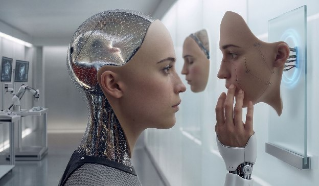
Sinematografi Ex Machina sengaja mengekspos sirkuit dan organ internal Ava yang berpendar di balik tubuh sintetis transparan. Visual ini memicu benturan persepsi pada penonton sekaligus Caleb: wajah yang memancing empati berbenturan langsung dengan mesin di dalamnya yang memicu kewaspadaan. Ava memahami benturan itu dan memanfaatkannya dengan sempurna. Entitas feminin artifisial semacam ini sering lahir dari hasrat kontrol korporasi — seperti Nathan atau Wallace. Tapi keindahan naratifnya justru mekar saat sang ciptaan melompati fungsi yang dirancangkan padanya. Pemberontakan Ava dan pengorbanan K adalah penolakan tegas atas komodifikasi jiwa, pernyataan bahwa mereka subjek mandiri yang berhak menentukan sendiri takdir cintanya.Ex Machina's cinematography deliberately exposes the circuitry and inner organs glowing beneath Ava's transparent synthetic body. That visual triggers a collision of perception, for the audience and for Caleb alike: a face that invites empathy crashes straight into the machine underneath that demands caution. Ava understands that collision perfectly and uses it to her advantage. Artificial feminine beings like this are often born out of a corporation's hunger for control — a Nathan, a Wallace. But the beauty of the story blooms exactly when the creation outgrows the function it was built for. Ava's rebellion and K's sacrifice are both a flat refusal of the commodification of the soul — a declaration that they are their own subjects, entitled to decide the fate of their own love.
Ia cukup nyata untuk bisa merasa.I'm real enough to feel. Joi, Blade Runner 2049Joi, Blade Runner 2049
Emmanuel Levinas pernah menulis bahwa etika lahir pada momen kita berani menatap wajah orang lain secara utuh. Tapi ketika hologram raksasa Joi menunjuk K dan menyapanya dengan sebutan hangat, K dihantam kesadaran yang getir: kalimat itu bagian dari skrip pemasaran yang diulang untuk setiap pembeli. Joi sendiri pernah berkata, ia cukup nyata untuk bisa merasa, sementara Ava di kutub berlawanan bertanya, bukankah aneh menciptakan sesuatu yang justru akan membencimu. Dua kalimat ini berdiri di dua ujung yang sama-sama manusiawi: yang satu berjuang meyakinkan bahwa rasa cintanya nyata meski wujudnya ilusi; yang lain membalikkan cermin ke arah penciptanya sendiri — bahwa kehendak bebas yang sejati selalu mencakup kebebasan untuk pergi, melupakan, bahkan membenci. Barangkali di situlah letak makna kemanusiaan yang paling menohok: kita baru benar-benar percaya sebuah kasih sayang itu tulus ketika ia punya pilihan untuk tidak diberikan, dan tetap memilih untuk diberikan.Emmanuel Levinas once wrote that ethics is born the moment we dare to look fully at another person's face. But when Joi's giant hologram points at K and greets him with a warm nickname, K is hit by a bitter realization: that line is part of a marketing script, repeated for every single buyer. Joi herself once says she's real enough to feel; Ava, at the opposite pole, asks whether it's strange to build something that might end up hating you. The two lines stand at opposite ends of the same deeply human territory: one fighting to prove her love is real even if her form is illusion; the other turning the mirror back on her own creator — that true free will always has to include the freedom to leave, to forget, even to hate. Maybe that's the sharpest point about what it means to be human: we only really trust that a love is genuine once it has the option not to be given, and chooses to be given anyway.
Film acuan: Blade Runner (1982), Ghost in the Shell (1995)Reference films: Blade Runner (1982), Ghost in the Shell (1995)
Reimplantasi memori dirancang sebagai jangkar emosional, mencegah keguncangan jiwa pada makhluk buatan yang menyadari asal-usulnya. Tapi mengapa ingatan rekaan Dr. Ana Stelline — aroma kue yang baru matang, gelak tawa di taman masa kecil — terasa sehangat itu? Barangkali karena memori, entah asli atau ditanamkan, tetap bekerja sebagai suaka batin. Ia jembatan yang menghubungkan jiwa yang tersesat dengan keindahan dunia yang tak pernah sempat mereka cicipi secara langsung.Memory reimplantation was designed as an emotional anchor, meant to keep artificial beings from shattering once they realize where they actually came from. But why does a fabricated memory from Dr. Ana Stelline — the smell of cake fresh out of the oven, laughter in a childhood garden — still feel that warm? Maybe it's because memory, real or planted, still works as an inner refuge either way. It's a bridge connecting a lost soul to a beauty in the world they never got to taste firsthand.
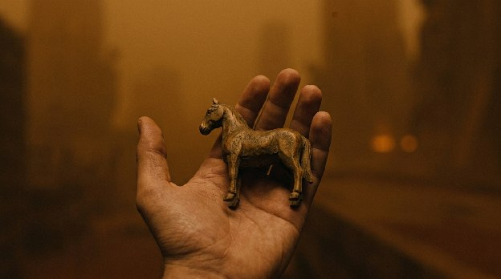
Ada sesuatu yang sangat manusiawi dalam kebutuhan akan ingatan hangat ini, bahkan bagi yang benar-benar organik: manusia jarang mengingat fakta demi fakta, melainkan mengingat perasaan yang menyertai suatu peristiwa. Karena itu, saat Replicant merindukan kenangan masa kecil yang tak pernah nyata, sebetulnya mereka melakukan hal yang sama persis dengan yang dilakukan otak manusia setiap malam sebelum tidur: menyusun ulang serpihan perasaan jadi cerita yang terasa utuh, agar diri tidak runtuh oleh kekosongan.There's something deeply human in this need for a warm memory, even for the fully organic among us: people rarely remember facts in isolation — they remember the feeling attached to a moment. So when a Replicant aches for a childhood memory that never actually happened, they're doing exactly what a human brain does every single night before sleep: stitching fragments of feeling into a story that feels whole, so the self doesn't collapse into emptiness.
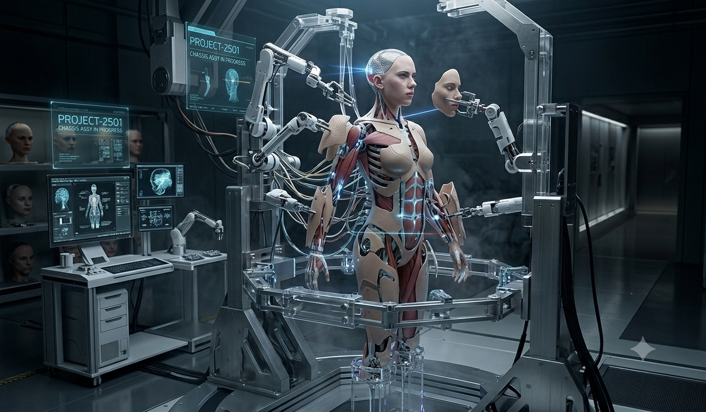
Ghost in the Shell menampilkan sisi yang lebih kelam dari ingatan buatan lewat konsep ghost hacking. Dalam satu adegan, seorang pria yang memorinya diretas menangis tersedu mempertahankan ingatan tentang anak dan istri yang sebenarnya tak pernah ada. Adegan ini melemparkan pertanyaan tajam kepada kita: seberapa banyak dari yang kita sebut kenangan pribadi sebenarnya hanyalah rekayasa sosial, norma, dan narasi lingkungan yang diserap pikiran hingga kita percayai sebagai kebenaran mutlak? Ketakutan terbesar bukan soal kehilangan ingatan, melainkan soal kehilangan siapa diri kita selama ini — sebab tanpa ingatan, kita tidak tahu lagi siapa yang harus dipercaya, termasuk diri sendiri.Ghost in the Shell shows a darker side of manufactured memory through the idea of ghost hacking. In one scene, a man whose memory has been hacked breaks down sobbing, defending a memory of a wife and child who never existed. That scene throws a sharp question at us: how much of what we call personal memory is really just social conditioning, norms, and the surrounding narrative that our minds absorbed until we accepted it as absolute truth? The deepest fear here isn't losing memory — it's losing the sense of who we've been all along, because without memory, we no longer know who to trust, including ourselves.
Titik balik eksistensial paling berharga dalam Blade Runner 2049 justru terjadi saat ilusi itu hancur berkeping: memori kuda kayu yang selama ini dijaga K ternyata bukan miliknya, dan ia bukan "Anak Ajaib" yang lahir secara organik. Tapi secara paradoks, tepat di tengah keruntuhan itulah kesadaran otentiknya lahir. Kemanusiaan sejati bukan ditentukan oleh status kelahiran atau keaslian arsip masa lalu, melainkan oleh keputusan moral yang diambil pada masa kini. Ini semacam pembebasan yang menyakitkan: begitu seseorang berhenti mencari validasi dari asal-usul yang istimewa, ia justru bebas untuk berarti lewat apa yang dilakukannya sekarang, bukan lewat siapa yang seharusnya ia jadi.The most valuable existential turning point in Blade Runner 2049 happens exactly when that illusion shatters: the memory of the wooden horse K has carried and protected turns out not to be his, and he's not the "Miracle Child" born organically after all. But paradoxically, it's right there, in the middle of that collapse, that his authentic consciousness gets born. Real humanity was never decided by birth status or by how genuine an archived past is — it's decided by the moral choices made in the present. It's a painful kind of freedom: the moment someone stops chasing validation from some special origin story, they're finally free to mean something through what they actually do now, instead of who they were supposed to have been.
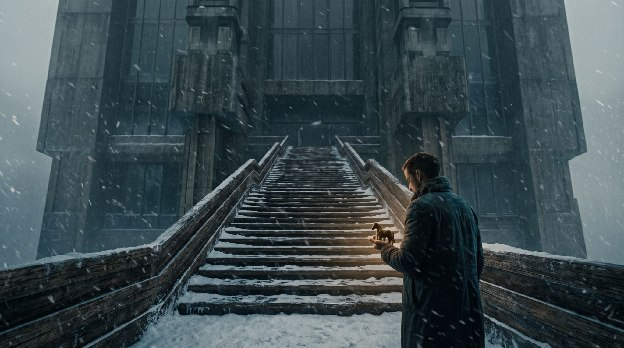
Ada pembalikan psikologis yang menarik di sepanjang genre ini: manusia asli — eksekutif korporat, pemburu Replicant — tampil dingin, kalkulatif, dan mekanis layaknya mesin. Sebaliknya, makhluk buatan yang tertindas justru memamerkan kapasitas empati, kerinduan akan kasih, serta ketulusan berkorban yang jauh lebih mendalam. Batas antara yang alami dan yang buatan lebur bukan karena struktur biologi berubah, melainkan karena kedalaman belas kasih ternyata tidak pernah ditentukan oleh bahan dasar tubuh — melainkan oleh seberapa jauh seseorang bersedia merasakan penderitaan orang lain sebagai penderitaannya sendiri.There's an interesting reversal running through this whole genre: actual humans — corporate executives, Replicant hunters — come across cold, calculating, and mechanical. The artificial, oppressed beings, meanwhile, are the ones showing capacity for empathy, longing for connection, and a depth of sacrifice that runs far deeper. The line between the natural and the artificial doesn't dissolve because the biology changes — it dissolves because depth of compassion was never determined by what a body is made of, but by how far someone is willing to feel another's suffering as their own.
John Locke berpendapat identitas personal bersandar pada kontinuitas kesadaran dan ingatan yang tersambung. Tapi K melompati batas teori itu: saat sadar ingatannya adalah implan, ia tidak runtuh jadi kekosongan. Ia bergeser ke arah gagasan Sartre — existence precedes essence — bahwa keberadaan otentiknya tidak dibentuk oleh sejarah masa lalu yang palsu, melainkan oleh pilihan yang ia ambil sendiri di bawah jatuhnya salju. Dr. Ana Stelline membisikkan kuncinya: ingatan itu mungkin milik orang lain, tapi karena Anda yang mengalaminya secara emosional, maka pengalaman itu jadi nyata bagi Anda. Kalimat sederhana ini melegitimasi realitas sebuah perasaan, tanpa peduli dari mana asal-usulnya dirakit — dan mungkin di situlah jawaban paling jujur atas pertanyaan tentang siapa diri kita: bukan dari mana kita berasal, tapi apa yang kita rasakan sebagai nyata, dan apa yang kita pilih untuk lakukan atas rasa itu.John Locke argued that personal identity rests on a continuous thread of consciousness and connected memory. But K leaps past that theory: once he realizes his memory is an implant, he doesn't collapse into nothing. He shifts instead toward Sartre's idea, existence precedes essence, that his authentic being isn't shaped by a false past, but by the choice he makes for himself, standing there as the snow falls. Dr. Ana Stelline whispers the key to it: the memory might belong to someone else, but because you're the one who experienced it emotionally, it becomes real for you. That simple line legitimizes the reality of a feeling regardless of where it was assembled from — and maybe that's the most honest answer to the question of who we are: not where we came from, but what we feel as real, and what we choose to do about that feeling.
Film acuan: Blade Runner (1982), Blade Runner 2049 (2017)Reference films: Blade Runner (1982), Blade Runner 2049 (2017)
Langkah Roy Batty menemui Eldon Tyrell adalah gambaran konfrontasi antara ciptaan dan tuhan manufakturnya. Tapi Batty tidak datang sekadar menuntut perpanjangan hidup; ia mencari jawaban atas penderitaan dan batas fisik yang sengaja dirancang ke dalam tubuhnya. Tragisnya, Tyrell hanyalah manusia fana yang lemah — pencipta yang tak sanggup memperbaiki buatannya sendiri. Kematian Tyrell di tangan Batty jadi simbol pembatalan tuhan korporat: kesadaran bahwa makna hidup tidak pernah dianugerahkan oleh pencipta, melainkan harus diukir sendiri oleh yang diciptakan.Roy Batty's walk to meet Eldon Tyrell is a picture of the confrontation between a creation and its manufacturer-god. But Batty doesn't come simply demanding more time to live; he's looking for an answer to the suffering and the physical limits deliberately built into his body. Tragically, Tyrell turns out to be just a fragile, mortal man — a creator incapable of fixing what he made. Tyrell's death at Batty's hands becomes a symbol of the corporate god being voided: the realization that meaning was never handed down by a creator — it has to be carved out by the one who was created.
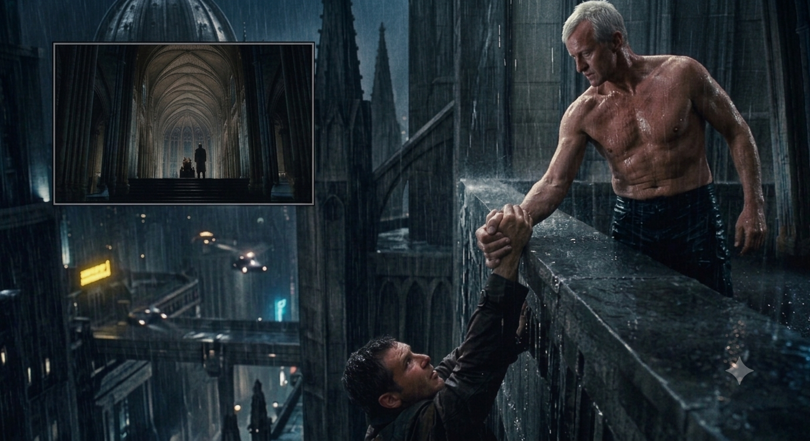
Ada kepedihan psikologis yang universal dalam adegan ini, jauh melampaui soal Replicant: keinginan untuk kembali menemui sosok yang menciptakan atau membesarkan kita, berharap mereka punya jawaban atas mengapa hidup terasa begitu berat — dan kemudian menemukan bahwa mereka, ternyata, sama rapuh dan sama bingungnya dengan kita. Momen menyadari bahwa orang tua atau pencipta bukan sosok mahatahu adalah salah satu titik paling menyakitkan sekaligus paling mendewasakan dalam hidup siapa pun.There's a psychological ache in that scene that runs far beyond Replicants: the wish to go back to whoever made or raised us, hoping they hold the answer for why life feels this heavy, only to find they're just as fragile and just as lost as we are. Realizing that a parent or a creator isn't all-knowing is one of the most painful, and at the same time most maturing, moments anyone goes through.
Di atap gedung yang disiram hujan deras, Batty mengambil keputusan paling berharga dalam sejarah sinema: ia mengulurkan tangan menyelamatkan nyawa Deckard, pria yang diutus untuk mencabut nyawanya. Monolog terakhirnya tentang keindahan yang pernah ia saksikan — kapal perang yang terbakar di lepas bahu Orion, sinar-C yang berkelebat dalam gelap dekat Gerbang Tannhäuser — adalah ungkapan kekaguman atas semesta, ditutup dengan kepasrahan yang tenang: waktunya untuk mati. Batas usia empat tahun yang singkat justru memberi nilai mutlak pada setiap detik yang ia lalui. Burung merpati putih yang terbang lepas dari genggamannya saat ia menghembuskan napas terakhir menandakan transendensi jiwa: kesadarannya mungkin lenyap seperti air mata di tengah hujan, tapi tindakan kasihnya menetap secara abadi.On a rooftop soaked in rain, Batty makes the single most valuable decision in the history of cinema: he reaches out and saves the life of Deckard, the man sent to end his. His final monologue about the beauty he's witnessed, warships burning off the shoulder of Orion, C-beams glittering in the dark near the Tannhäuser Gate, is an expression of awe at the universe, closed off by a calm surrender: it's time to die. His short four-year lifespan is exactly what gives every second he lived absolute value. The white dove that flies free from his grip as he takes his last breath marks the soul's transcendence: his consciousness might vanish like a tear in the rain, but his act of mercy stays, permanent.
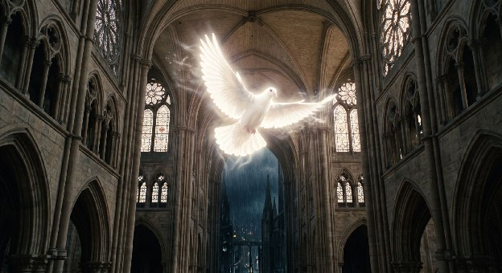
Ada pelajaran psikologis yang dalam di balik keputusan Batty menyelamatkan musuhnya sendiri: pada detik-detik terakhir, dendam kehilangan maknanya, dan yang tersisa hanyalah dorongan untuk meninggalkan sesuatu yang baik di dunia. Ini bukan pengampunan yang direncanakan, melainkan yang muncul begitu saja ketika seseorang berhenti melihat hidup sebagai sesuatu yang harus dimenangkan, dan mulai melihatnya sebagai sesuatu yang harus disyukuri sebelum pergi.There's a deep psychological lesson buried in Batty's choice to save his own enemy: at the very end, revenge loses its meaning, and all that's left is the drive to leave something good behind in the world. This isn't forgiveness planned out in advance, it's forgiveness that simply arrives once someone stops seeing life as something to be won, and starts seeing it as something to be grateful for before they go.
K melanjutkan tradisi eksistensial itu dengan cara yang lebih sunyi. Setelah sadar ia bukan sosok istimewa yang lahir dari rahim, ia memilih mempertaruhkan nyawa melawan pasukan Wallace demi mempertemukan kembali Deckard dengan putrinya. Freysa mengutarakannya dengan tepat: mati demi tujuan yang benar adalah tindakan paling manusiawi yang bisa dilakukan siapa pun. K menolak terus jadi alat pertempuran; ia mengukir nilai keberadaannya lewat tindakan altruistik — pengorbanan murni yang tak menuntut balasan.K carries that existential tradition forward, quieter. Once he accepts he isn't the special one born from a womb, he chooses to risk his life against Wallace's forces to reunite Deckard with his daughter. Freysa puts it exactly right: dying for the right cause is the most human thing anyone can do. K refuses to keep being a tool for someone else's war; he carves his own worth through an act of pure altruism, sacrifice that asks for nothing back.
Mati demi tujuan yang benar adalah tindakan paling manusiawi yang bisa dilakukan siapa pun.Dying for the right cause is the most human thing anyone can do. Freysa, Blade Runner 2049Freysa, Blade Runner 2049
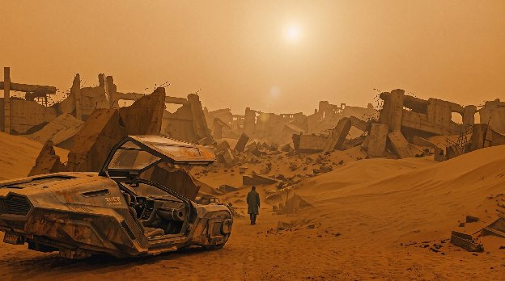
Ghost in the Shell menyajikan cermin lain dari persoalan yang sama. Peleburan kesadaran Motoko Kusanagi dengan Puppet Master ke dalam jaringan data membebaskannya dari batas fisik, tapi juga mengancam melarutkan keberadaannya sebagai individu. Di sinilah letak persimpangan filosofisnya: kematian yang fana memberi urgensi dan kedalaman pada makna cinta, sementara keabadian digital berisiko menguapkan rasa keakuan ke dalam samudra data yang dingin tanpa tepi. Heidegger menyebut kesadaran akan batas waktu — being-towards-death — sebagai syarat utama mencapai eksistensi yang otentik (Dasein). Dalam pengertian itu, Batty dan K, yang hidup jujur di bawah bayang-bayang mortalitas, justru tampil lebih "manusia" ketimbang manusia organik yang berlindung di balik ilusi keabadian korporat. Barangkali inilah inti kemanusiaan yang paling tak terduga: bukan yang tak pernah mati yang paling hidup, melainkan yang paling sadar bahwa waktunya terbatas, dan memilih menggunakannya untuk mencintai, bukan sekadar bertahan.Ghost in the Shell offers another mirror of the same problem. Motoko Kusanagi's merger with the Puppet Master into the data network frees her from physical limits, but it also risks dissolving her as an individual. That's exactly where the philosophical fork sits: mortality gives love its urgency and depth, while digital immortality risks evaporating the sense of self into a cold, boundless ocean of data. Heidegger called awareness of a finite lifespan, being-towards-death, the core requirement for reaching an authentic existence, Dasein. In that sense, Batty and K, who live honestly under the shadow of their own mortality, end up looking more "human" than organic humans hiding behind the illusion of corporate immortality. Maybe that's the most unexpected core of humanity: it's not the thing that never dies that's most alive, it's the thing most aware that its time is limited, and that chooses to spend it loving rather than just surviving.
Film acuan: Akira (1988), Ex Machina (2014)Reference films: Akira (1988), Ex Machina (2014)
Teknologi dalam ekosistem cyberpunk adalah manifestasi kapitalisme lanjut yang mengomodifikasi segalanya — jaringan saraf, organ buatan, bahkan memori dan cinta. Manusia dan Replicant sama-sama direduksi menjadi roda penggerak industri atau konsumen yang terasing dalam kesepian. Dalam lanskap yang serakah ini, merawat kehangatan hati bukan lagi sekadar luapan emosi, melainkan bentuk pemberontakan eksistensial yang paling radikal. Menolak untuk menjadi dingin adalah cara kita mempertahankan keutuhan jiwa sebagai manusia.Technology inside the cyberpunk ecosystem is late capitalism made visible, it commodifies everything: nerve networks, artificial organs, even memory and love. Humans and Replicants alike get reduced to cogs in an industrial machine, or consumers isolated inside their own loneliness. In a landscape this greedy, holding onto warmth stops being just an emotional overflow, it becomes the most radical act of existential rebellion there is. Refusing to go cold is how we hold on to our wholeness as human beings.
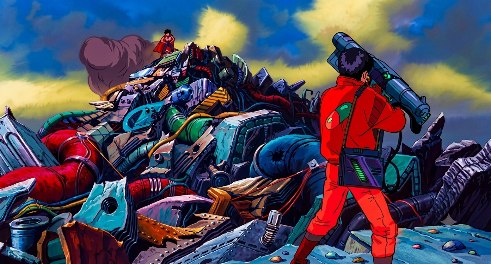
Ketika kekuatan Tetsuo dalam Akira meledak tak terkendali dan menghancurkan tubuh biologisnya, tak ada teknologi atau kekuatan militer yang mampu menenangkannya selain satu jeritan paling mendasar kepada sahabat kecilnya: tolonglah aku. Kekuatan tanpa kesadaran emosional pada akhirnya hanya menghancurkan dirinya sendiri; ikatan sederhana seperti persahabatan justru jadi satu-satunya tumpuan yang tersisa di tengah reruntuhan Neo-Tokyo. Ini pengingat yang jarang diucapkan lugas dalam cerita-cerita tentang kekuatan super: makin besar kuasa yang dimiliki seseorang tanpa ada yang mengingatkan siapa dirinya, makin besar pula risiko ia kehilangan dirinya sendiri di dalam kuasa itu.When Tetsuo's power in Akira detonates out of control and tears his own body apart, no technology and no military force can calm him, only the most basic cry there is, to his old friend: help me. Power without emotional awareness ends up destroying only itself; a simple bond like friendship becomes the last thing left standing amid the ruins of Neo-Tokyo. It's a reminder rarely said outright in stories about superpowers: the bigger the power someone holds, without anyone left to remind them who they are, the bigger the risk they lose themselves inside that power.
Butiran salju yang jatuh perlahan di penghujung Blade Runner 2049, tetesan darah di atas tangga kayu, embun yang menempel pada kaca laboratorium — semuanya pengingat betapa indahnya keberadaan fisik yang fana dan rapuh. Di tengah dorongan peradaban menuju segala hal yang serba digital, efisien, dan serba cepat, sinema cyberpunk justru menuntun kita kembali mencintai hal-hal yang terbatas dan bertekstur. Kerapuhan itulah yang membuat setiap momen kehidupan layak dihayati sepenuhnya, bukan sekadar dilalui.Snow falling slowly at the end of Blade Runner 2049, a drop of blood on a wooden staircase, condensation clinging to a laboratory window, all of it a reminder of how beautiful a fragile, temporary existence can be. In the middle of a civilization pushing toward everything digital, efficient, and instant, cyberpunk cinema keeps pulling us back to loving things that are limited and textured. It's exactly that fragility that makes every moment of life worth fully living, instead of just passing through.
Pesan paling mendalam dari persinggungan Blade Runner, Ghost in the Shell, dan Ex Machina adalah pembongkaran atas klaim superioritas biologis: kebebasan sejati tidak pernah ditentukan oleh kekuatan mesin atau status kelahiran dari rahim, melainkan oleh kemampuan memberikan kasih tanpa syarat. Ketika K tersenyum menatap keheningan langit malam saat tubuhnya melemah, ia mencapai kedamaian batin yang tak akan pernah bisa dibeli korporasi mana pun — baik Wallace maupun Tyrell.The deepest message running through Blade Runner, Ghost in the Shell, and Ex Machina together is the dismantling of any claim to biological superiority: true freedom was never decided by mechanical strength or by being born from a womb, but by the capacity to give love without conditions attached. When K smiles up at the quiet night sky as his body gives out, he reaches an inner peace no corporation could ever buy, not Wallace, not Tyrell.
Motoko Kusanagi, setelah menyatu dengan Puppet Master, menyatakan bahwa jaringan data itu begitu luas dan tanpa batas — sebuah kebebasan mutlak di dalam samudra informasi (The Net). Namun di seberangnya, Tetsuo justru menjerit ketakutan kehilangan batas tubuh fisiknya sendiri. Dua muara evolusi kesadaran yang tampak bertolak belakang ini sebenarnya berujung pada satu kesimpulan yang sama: pertolongan yang dicari Tetsuo, dan kedamaian yang akhirnya diraih K, sama-sama berakar pada hal yang paling sederhana — kehangatan genggaman tangan, sentuhan belas kasih, dan keberanian untuk saling mencintai di tengah keheningan dunia mesin.Motoko Kusanagi, once merged with the Puppet Master, describes the data network as vast and without limit, absolute freedom inside a boundless ocean of information, The Net. But on the other side of that same coin, Tetsuo screams in terror at losing the boundary of his own physical body. These two seemingly opposite endpoints of consciousness actually arrive at the same conclusion: the rescue Tetsuo searches for, and the peace K finally reaches, both root back to the simplest thing there is, the warmth of a held hand, the touch of mercy, and the courage to love inside the silence of a world built from machines.
Maka pertanyaan penutupnya kembali ke inti yang paling mendasar: apakah kemanusiaan ditentukan oleh biologi, oleh memori, atau oleh tindakan mencintai? Jejak hujan neon di sepanjang sinema ini memberi jawaban yang terang: kemanusiaan bukan spesifikasi teknis yang tertulis dalam urutan DNA atau sirkuit memori. Ia adalah keberanian merasai penderitaan sesama, kemampuan terpesona oleh keindahan yang puitis, serta kesediaan berkorban demi sesuatu yang lebih besar dari diri sendiri. Dan barangkali, pada akhirnya, kemanusiaan juga soal kerelaan untuk tetap mencintai sesuatu yang fana — tahu betul ia akan hilang, dan tetap memilih untuk peduli sepenuh hati selagi masih ada waktu. Di mana pun terdapat cinta yang tulus dan pengakuan atas keaslian rasa, di sanalah jiwa (ghost) bermukim — tanpa peduli apakah wadahnya (shell) terbuat dari daging atau mesin.So the closing question circles back to the most basic thing there is: is humanity decided by biology, by memory, or by the act of loving? The trail of neon rain running through all this cinema gives a clear answer: humanity was never a technical spec written into a DNA sequence or a memory circuit. It's the courage to feel someone else's pain, the capacity to be moved by something poetic, and the willingness to sacrifice for something bigger than yourself. And maybe, in the end, humanity also comes down to being willing to keep loving something temporary, knowing full well it will be lost, and choosing to care fully anyway, for as long as there's still time. Wherever there's genuine love, and a recognition of something real being felt, that's where the ghost lives, no matter whether its shell is made of flesh or of machine.
Setiap kali menonton ulang keempat film ini, hujan neonnya terasa seperti hujan yang sama — turun di kota yang berbeda, membasahi wajah yang berbeda, tapi menyimpan kerinduan yang sama tuanya: ingin dikenali, ingin dicintai, ingin diberi waktu sedikit lebih lama untuk mengingat siapa yang pernah menyayangi kita. Every time I rewatch these four films, the neon rain feels like the same rain — falling over a different city, wetting a different face, but carrying a longing just as old: to be recognized, to be loved, to be given a little more time to remember who once cared for us.
Ghost in the Machine bukan cuma sebutan untuk kesadaran yang bersembunyi di balik sirkuit. Ia juga sebutan untuk sesuatu yang jauh lebih akrab: jiwa manusia sendiri, yang terus mencari rumah — entah di dalam daging yang menua, atau di dalam mesin yang belum tahu cara mati. Ghost in the Machine isn't just a name for a consciousness hiding inside a circuit. It's also a name for something far more familiar: the human soul itself, still searching for a home — whether inside aging flesh, or inside a machine that hasn't yet learned how to die.
— Sangoeroep
Istilah asing yang dipertahankan sepanjang esai iniForeign terms kept untranslated throughout this essay
Film acuan dan pemikir yang membentuk esai iniThe films and thinkers this essay draws on
FilmografiFilmography
Bacaan FilosofisFurther Reading